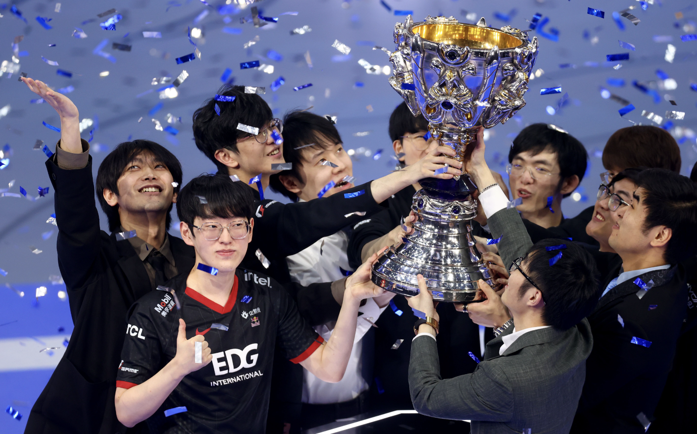
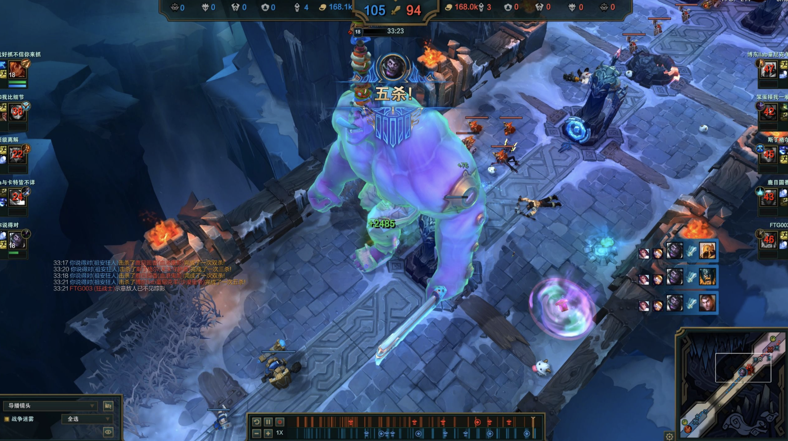
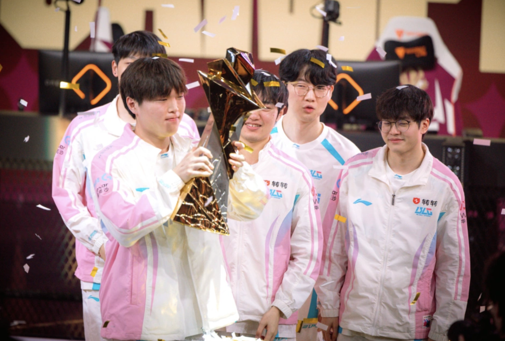
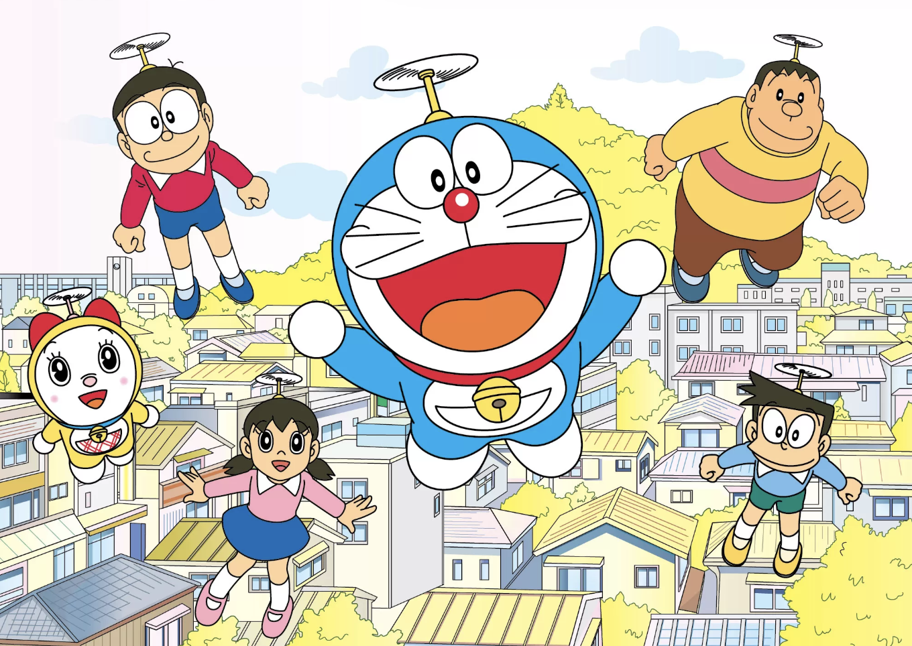
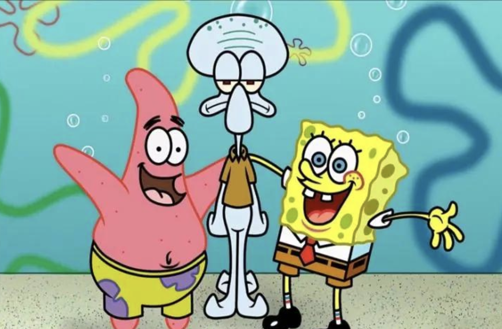

先找源头
ECON
DATA
AI
PYTHON

嗨！我是你的博客新门面 🐼
Jia Yangrui
curious by default
JYR
宏观周期✦产业研究✦跨境贸易✦
原始资料✦数据可视化✦研究工作流✦
把问题讲清楚✦Python 工具✦保持好奇✦
宏观周期✦产业研究✦跨境贸易✦
原始资料✦数据可视化✦研究工作流✦
把问题讲清楚✦Python 工具✦保持好奇✦
再看结构
把一个数字放进周期、行业和制度里看。
↗最后说人话
写完之后，问一句：这对谁有用？
✦01 / WRITING
最近在写
写宏观、产业和贸易，也写那些数据背后不那么容易被看见的条件。
不急着下结论，先把证据和反例摆在桌面上。
正在加载 Markdown 内容…
NOW · 此刻
最近反复琢磨的三个问题
更新 ·
点一下，说说你更倾向哪一边 · 结果只存在你的浏览器
-
01
PPI 修复能否从上游价格，真正传导到企业盈利与有效需求？
-
02
当产能走出去，中国制造如何继续掌握设备、材料与标准？
-
03
AI Agent 能否把研究者从"搜集信息"中解放出来？
02 / LAB
把问题做成
可以运行的东西
有些问题靠一篇报告说不完，就把它们做成工具、看板或可以反复使用的小流程。
正在加载项目卡…
03 / PLAYGROUND
认真之外，
也留一点空档。
不把每一页都做成工作台。这里有一点游戏、一个小终端，和一些不影响正事的乐趣。
NPS · 博客体验
"比起聪明，流程似乎更重要：资料查到底，模型跑到底，话说到位。"
共 0 句
悄悄打个分（0-10）：
目前 123 人评分，谢谢你的耐心
MEMORY GAME · 熊猫翻牌
翻两张相同的图标就配对 · 测测你的记忆力
visitor@jyr-lab:~
$ 欢迎来到 JYR 实验室。输入 help 查看可用命令。
STACK · 我会这些
吃饭
睡觉
打呼噜
Python
scikit-learn
LLM Agent
SQL
Stata
Pandas
Playwright
HTML/CSS
Vanilla JS
数据可视化
RAG
LightGBM
TODAY · 你今天怎么样
点一下告诉我，今天就多了 1 个一起走的人：
累计 · 今天已经有 0 个人点过了
HITOKOTO · 一言
「要有实力，要有背景，更要有脑子」
TODAY · 今日幸运
🐼
点一下骰子，看看今天建议你干什么
REAL-TIME · 实时数据
--
现在的北京时间
—
星期几
1
今天你已经访问这个页面 1 次了
数据全是客户端实时计算，没有任何后端。
你的访问历史只存在你的浏览器本地。
04 / ABOUT
研究、数据和工具，
是我目前最常待的三个地方。
本科读市场营销，现在在对外经济贸易大学读国民经济学硕士。做过自贸区、产业链和宏观热点的研究助理工作；下班后会写一点 Python 工具，把重复的检索、整理和核对工作交给程序。
我不擅长说大话。能把一份资料查明白、把一个判断讲准确、把一件小事做完整，就已经很有成就感。
PythonPandasscikit-learnStata
SQLWindCEICRAGLLM Agent
哈尔滨商业大学市场营销 · 本科
对外经济贸易大学国民经济学 · 硕士
国研网研究助理
🐼
关于我这个人
- ✓ 看见数字会想追问：它从哪来、还能怎么验证？
- ✓ 做事喜欢先搭好流程，再慢慢把细节补齐。
- ✓ 研究卡住时，会去散步、打游戏，回来再看一眼。
- ✗ 不太能接受“差不多就行”作为解释。
- ✗ 读不下只有形容词、没有证据的报告。
- ✓ 偶尔画熊猫，也认真研究怎么把页面做得更好看。
HOBBIES · 下班以后
离开工作台之后，
把脑子交给别的世界。
MOBA、FPS、4X、城市建造、策略、动画、小说和三国。喜欢的东西很多，放在一起也不冲突。








MIND · 较真的另一面
最近读什么、看什么，
也顺手记下来。
📚 在读 / 在看
- 《平凡的世界》 — 重读时还是会被那些朴素的劲头打动
- 《三国演义》 — 反复看人物怎么做选择，也看局势怎么把人推着走
- 《1984》《娱乐至死》 — 提醒自己，信息很多不等于判断更自由
- 《三体》 — 好故事会让人愿意停下来想很久
🎬 视频 / 创作者
- HBK08 — 轻松但不敷衍，适合在脑子过载时看一会儿
- 小约翰可汗 — 叙事节奏和资料密度都很有意思
- 乔尔儿 — 高校联赛有一种很真诚的热闹
🤖 工作流
- Hermes + Codex + vibecoding — 现在常用的一组工具
- 想把 AI 用在检索、整理和重复劳动上，把判断留给人
- 最近在折腾：本地小模型、ReAct 和多模态任务
- 哆啦 A 梦 / 海绵宝宝 — 用来提醒自己别一直绷着
三国 · 情怀
曹操 × 司马懿 ——
看人，也看局。
喜欢他们并不因为谁更“正面”，而是因为在复杂局面里，人怎么判断、忍耐和选择，永远值得琢磨。
「夫英雄者，胸怀大志，腹有良谋，有包藏宇宙之机，吞吐天地之志者也。」
05 / THINKING
最近在想的事
这里不是定稿文章，更像写到一半的备忘。
有些问题还没有答案，先把当下的想法和证据记下来，等下一次再回来校正。
正在加载最近的想法…
LET'S TALK
如果你也在关心这些问题，
欢迎来聊。
研究合作、数据项目，或者只是想交换一个还没想明白的观点，都可以。

☕ 一张桌子、一杯咖啡、几份没读完的资料。
research desk / data / late-night workflow